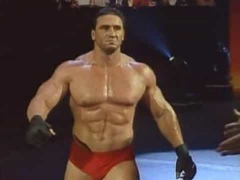

< < < Back
Helio Gracie Was A Frail, Defenseless Man—Who Happened To Give Birth To Brazilian Jiu Jitsu – Return Of Kings
I had the opportunity to train with Toney Waldecker, one of the few Brazilian Jiu Jitsu blackbelts that can trace their craft all the way back to Helio Gracie. In fact, I even got to train with Relson Gracie, the oldest son of Helio, the man who started it all.
I recall my own astonishment upon watching Relson Gracie, a 135 pound 5’6″ old Brazilian man, systematically beat every single one of my fellow students. It didn’t matter if they were 6’3″ 255 pounds, or if they were 5’8″ 155 pounds—he beat them all just the same.
He told us that Brazilian Jiu Jitsu was created by his father, Helio Gracie, way back in the 1930’s.
Helio’s Childhood
Helio Gracie was not a very physically impressive man – in fact, he was quite the opposite. Standing at a mere 5’6” and weighing 115 soaking wet, most men would laugh at the thought of this man pioneering the world’s newest and deadliest martial art.
He was born in Belem do Para, Brazil in 1913, to an influential business man named Gastão Gracie. Ever since a young age, Helio had fainting spells, often triggered by something as simple as running up the stairs too quickly. In fact, when he reached second grade, he convinced his mother that he was too sick to continue school, and she fell for it—he never attended a day of schooling past second grade.
It seemed that this young Helio Gracie was destined for nothing special; just another human being taking up resources and giving very little to the earth in return. However all of this changed one fateful day when a Japanese Jiu Jitsu master moved to the same neighborhood as the Gracies.
Esai Maeda, often referred to as Count Coma, needed help getting established in this new city, and Helio’s father, being an established businessman, helped him to do so. As a sign of his gratitude, Esai offered to teach the noble art of Japanese Jiu Jitsu to Helio’s oldest brother, Carlos Gracie.
How The Seed Was Planted
Carlos was becoming better and better at Japanese Jiu Jitsu, but seemingly out of nowhere, his father began to experience some financial troubles. Helio and his 7 other children were then sent off to live with various relatives in Brazil, to save the Gracie family some financial burden.
When Helio was 14, he moved to a borough of Rio de Janeiro, known as Botafogo, with his older brothers. They all supported themselves through various means, but the man of the house was Carlos. He managed to pull in a sizable amount of money by teaching Japanese Jiu Jitsu to the locals at his very own dojo.
Soon enough, Helio began to practice Japanese Jiu Jitsu with his older brothers, but he would get his ass beat on the regular due to his small size. Japanese Jiu Jitsu emphasizes strength and speed, which worked well for Helio’s older brothers. But for someone of such a modest size, such an art doesn’t work.

A Japanese Jiu Jitsu throw that relies on strength
Thus, Helio began to modify the techniques he was taught to emphasize leverage and timing, rather than strength and speed. Over the course of the next four years he developed what is now known as Brazilian (or “Gracie”) Jiu Jitsu.
An Open Challenge: Spreading The Word
As a way to spread the word of Gracie Jiu Jitsu’s brutal effectiveness, Helio openly challenged every single martial artist in all of Rio. Soon enough, black belts from all different disciplines were knocking at his door accepting the challenge.
One by one, he beat them all—it didn’t matter what their discipline was, because in the words of Helio Gracie: “When we go to the ground, you are in my world. The ground is the ocean, I am the shark, and most people don’t even know how to swim.”
Soon enough, he began to capture a wide audience. Word of this unbeatable martial art spread across Brazil, eventually attracting the attention of Yukio Kato, one of the top Judoka competitors in the world.
Kato outweighed Helio Gracie by nearly 40 pounds. Gracie intended to use this to showcase the sheer deadliness of his martial art. If a 185 pound man had beaten Kato, sure it would have been impressive, but it’s not that big of a deal. If a 115 pound man beat Kato, however, this would draw some attention.
Helio choked him out within eight minutes, to the astonishment of the crowd—“How the hell did he do that?” was the predominant thought racing through all of their heads. And like that, Helio Gracie and his infamous martial art grew in landslide popularity.
Helio The Player (And Father)
As one might assume, Helio’s widespread popularity brought him ample attention from the ladies—in fact, his second wife was 32 years younger than him. Quite the womanizer, indeed. Helio had 7 sons and 2 daughters, however I will focus on Rorion and Royce (pronounced Horion and Hoyce), because they are the most integral to the spread of Gracie Jiu Jitsu.
Helio was sure to teach both of them Gracie Jiu Jitsu from a very young age—some sources claim he started teaching them as soon as they could walk. Nonetheless, by the time that they were adults, they were absolutely ruthless black belts, skilled at beating even the most challenging opponent.
The Gracie Challenge
When he was 26, Rorion moved to Southern California. For a while, he had to support himself as an extra in various movies, but he decided that it was his mission to spread the knowledge of Gracie Jiu Jitsu. What he did was very simple. He laid down some mats in his garage, and offered anyone who could beat him $100,000.
Yes, that’s right—$100,000. Rorion didn’t even have that kind of money, being an immigrant who just moved to the states, but he was so utterly confident in his own abilities, that he was prepared to take that risk. This became known as the “Gracie Challenge.”
https://www.youtube.com/watch?v=0b9v1slvjFo
One by one, competitors came in and were submitted. None could stand against the awesome might of Gracie Jiu Jitsu, nonetheless against a man who had been training in it since he was 2 years old.
Eventually Rorion began teaching classes. Everybody wanted to know how to do Gracie Jiu Jitsu. It started to spread through word of mouth, and soon enough people from all over Southern California were flocking to Rorion’s dojo.
The Birth Of The Ultimate Fighting Championship
Rorion, being the ambitious man that he is, decided that this wasn’t enough. He wanted to create an ultimate competition, to determine the best martial art of all time, modeled off of the “Vale Tudo,” or Portuguese for “Anything Goes,” fights so common in Brazil.
So, in 1993, he founded the UFC—a pay per view event that shocked thousands of people all across the USA, including John McCain who called for a ban on the sport due to its brutality. Rorion recruited seven of the world’s deadliest and most popular martial artists, enticing them with the chance to prove their superiority. Little did they know, however, what they had in store.
Rorion decided that he could fight in the UFC himself. The best showcase of Gracie Jiu Jitsu’s awesome power, however, would be from Royce Gracie. Rorion was around 215 pounds, and 6’3″—and although it would be impressive if he won, he thought that it would be far more impressive if his younger brother, Royce, took the gold medal.

Royce Gracie – the man who would represent Gracie Jiu Jitsu in UFC 1
Royce was 6’1″ and weighed in at 176; considering that he was up against a Sumo wrestler weighing over 400 pounds, and Ken Shamrock, a world class wrestler at a lean 212 pounds, Royce’s humble weight of 176 was nothing.
UFC 1
UFC 1 was a martial artist’s wet dream. The only rules were no biting or eye gouging. Aside from that, anything else was allowed.
Each competitor represented a different martial art: Teila Tuli (Sumo Wrestling), Gerard Gordeau (Savate), Kevin Rosier (Kickboxing), Zane Frazier (Kenpo), Art Jimmerson (Boxing), Ken Shamrock (Shootfighting), and Patrick Smith (Tae Kwon Do) were all too concerned with one another to even notice Royce Gracie who represented BJJ.
The first fight was Gerard Gordeau vs. Teila Tuli; a 216 lb Savate practitioner vs. a 460 pound Sumo wrestler. It seemed like everyone knew what was going to happen. Ken Shamrock tells the story well—all the guys in the locker room were jumping around, pounding their chests, and getting psyched. “Who do you think will win?” one of them asked. “Are you kidding? That guy’s massive, Gerard doesn’t stand a chance.”
And like that, under just 30 seconds, the match ended—Gerard knocked 3 of Teila’s teeth out in a series of savage kicks to the face. The referee was forced to stop the match lest Teila become permanently brain damaged.
There was dead silence in the locker room—“Holy shit,” one of them said. “What have we gotten ourselves into?”
Royce’s Victory
One by one, the champions fought. For the semi-finals it was Gerard Gordeau vs. Kevin Rosier, an American kickboxing super-heavyweight champion. Despite his impressive title, Gerard completely demolished him within 2 minutes. You can watch the fight here.
The other semi-finals match was Royce Gracie vs. Ken Shamrock. Shamrock was probably the biggest threat to Gracie, due to his knowledge of wrestling. Obviously it wasn’t on-par with Royce’s knowledge of submissions, but Shamrock at least had enough knowledge to make submission very difficult for Gracie. In addition to this, Shamrock outweighed Gracie by over 30 pounds—and for anyone who’s ever sparred with others, you’ll be aware of just how huge this weight disparity is.

The massive Ken Shamrock
Ken struggles, but Royce gets his back and finishes him off with a rear-naked choke hold. And like that, Ken was stunned. He had a 30 pound advantage on this skinny Brazilian man, and somehow Royce had won.
But it wasn’t over yet. For the final match he was up against Gordeau, who is known for being a dirty fighter. He eye-gouged and ear bit others on multiple occasions, and in addition to this he is a ruthless Savate practitioner. He stands at 6’5″ giving him a huge reach advantage over Royce, not to mention the 40 pound difference between the two.
The bell rings, and Gordeau keeps his distance—he’s very well aware of Royce’s ground advantage. But Royce throws a kick, distracts Gordeau, and goes in for the double leg take down! Gordeau backs up and retains his balance, but Royce is determined. He slips a leg behind Gordeau and manages to push him back into a corner of the octagon.
Royce manages to get Gerard off balance and throws him onto the ground—now we’re in Gracie territory. Royce gets the full mount, and it seems like an easy win, but Gerard pulls out the dirty tricks. He starts trying to bite Royce’s ear! Royce won’t have this, though—he head butts the shit out of Gerard and manages to get him into a rear-naked choke hold. He holds it for a little extra to let Gordeau know what’s up.
The Fame Spread
And like that, Gracie Jiu Jitsu had become a world-wide phenomena. Fighters from all over the globe flew in to learn the secrets of this mysterious martial art. Various branches of Brazilian Jiu Jitsu began to emerge as the art began to evolve, but one fact remained the same: everyone wanted in on the action. Who wouldn’t want to know how a 178 pound scrawny Brazilian man beat the world’s top competitors who outweighed him by over 30 pounds?
The UFC went on to experience massive backlash from American politicians and senators in the mid 1990’s, but it had already become a cultural phenomena. John McCain was particularly vocal against it, calling it “human cockfighting,” but the people wanted more. As a way to make the sport more “family friendly,” the UFC implemented various rules such as no fish-hooking, hair-pulling, or skull stomping.
And now, here we are today. Nearly every other person in the US practices BJJ, but don’t forget where it all started. It wasn’t always like this, with a BJJ mat set up in nearly every city across the US. Once upon a time, it was only taught in Brazil, in one of the poorer boroughs of Rio. Don’t forget that it all started when one man decided that he had had enough—he was fed up with getting his ass kicked, and decided to change things.
And because of his determination and work-ethic, he started what is now widely respected as the greatest ground fighting martial art of all time.
Read More: 5 Things I Learned About Life From Brazilian Jiu Jitsu